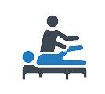
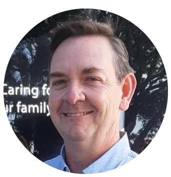

General Practice
Four family practitioners providing trusted day-to-day medical care, check-ups and chronic care for all ages.
A warm, family-friendly health centre in Waterfall, KwaZulu-Natal — bringing general practice, physiotherapy, dentistry, pathology and nursing together under one trusted roof.
Link Hills Medical Centre is a family-friendly healthcare facility that has cared for our community for over thirty years. Recognised as a Syntro-P Health Centre of Excellence, we bring together doctors, physiotherapists, dentists, pathology and nursing teams so your whole family can be looked after in one welcoming place.
From everyday check-ups to specialist treatment, our team offers a full spectrum of care for every member of the family.
Four family practitioners providing trusted day-to-day medical care, check-ups and chronic care for all ages.

Hands-on rehabilitation and pain management to help you move freely and recover after injury or surgery.
An independent physiotherapy practice located on our premises.
Cleanings, fillings, extractions, dentures, crowns, bridge work and teeth whitening for a healthy smile.
An independent dental practice located on our premises.
On-site diagnostics by JDJ Diagnostics for fast, reliable blood work and laboratory testing.
Three registered nursing sisters providing vaccinations, wound care, screenings and everyday support.
Our reception team will happily point you to the right service for you and your family.
Talk to usFriendly, experienced practitioners who take the time to know you and your family.

Appointments with our family practitioners are booked online through RecoMed — choose your doctor below to see live availability and confirm in a few clicks. Prefer to talk? Our reception team is always happy to help.
Select a family practitioner to book online via RecoMed.
Dr Sean DuffeyGeneral Practitioner Book → Dr Carrie-Anne GrinakerGeneral Practitioner Book → Dr Heidi DuvelGeneral Practitioner Book →Physiotherapy and dentistry are independent practices on our premises — please contact them directly to book.
A few of the things patients ask us most. Can't find your answer? Get in touch.
We're open Monday to Friday from 07:30 to 17:00, and Saturdays from 08:00 to 12:00. We're closed on Sundays and public holidays.
Appointments with our family practitioners are booked online through RecoMed — just pick your doctor in the Appointments section to see live availability. You're also welcome to call reception on 031 763 3834.
General practice, on-site pathology by JDJ Diagnostics, and nursing services are part of the practice. Physiotherapy and dentistry are independent practices located on our premises — please contact them directly to book.
We're at 2 Niagara Drive, Waterfall, KwaZulu-Natal. There's parking on site and easy access from the main road.
Absolutely — caring for your family is at the heart of what we do. From little ones to grandparents, everyone is welcome.
We'd love to welcome you to Link Hills Medical Centre.
2 Niagara Drive, Waterfall,
KwaZulu-Natal, South Africa
Mon–Fri 07:30–17:00
Sat 08:00–12:00